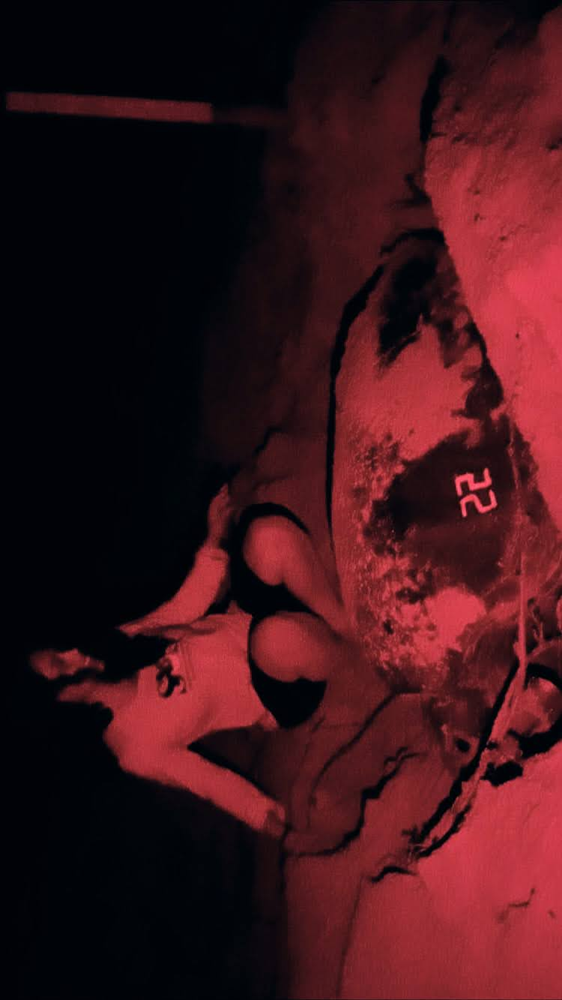

Chile fieldworkChilean coastline researchLandscape fieldworkBeach landscapeResearch in the fieldField team 2023Field samplingCrab field observationStudying nesting sites

Nesting workNesting mother turtleNesting momNest polesTracking wildlifeHatchlingsWhite hatchling imageConservation researchScuba fieldworkScientific divingUnderwater explorationGooseneck barnaclesSeining workMackerel researchLobster studyField team memberMeasuring respirationMarine biology researchBlack sea bass faceHands-on scienceBrook trout studyGenetic samplingSample recoverySamples in the fieldCommunity outreachProtection workDolphin encounterExploring natureFieldwork on the SeineYoung-of-year experimental setupYOY tanks setupSea turtle nesting fieldworkEgg laying in the field